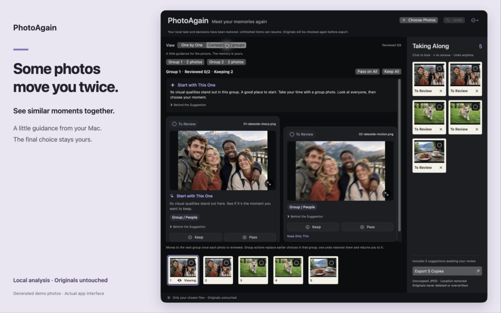
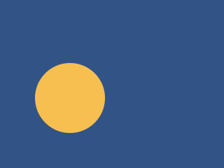
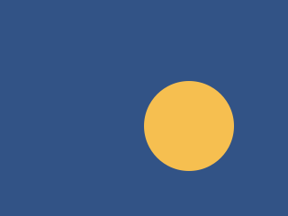
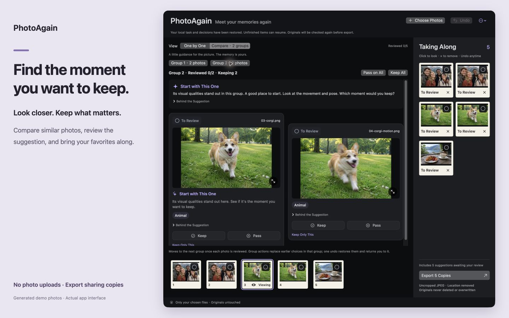

Some photos
move you twice.
The first time, you live it.
The second, you see what stayed.
An open toolkit for the second look.
Build photo-selection experiences with local evidence,
editable recipes, and room for human judgment.

PHOTOAGAIN MAC APP PREVIEW Actual app screenshot with generated, fictional sample photos. Separate from the SDK; not evidence of framework results. Separate image display terms ↗
Make your own second look.
Swift SDK + CLI. Inspect it, change it, build on it.
A free Mac app, too.
A separate product for your everyday photo review.
Good evidence.
Your point of view.
A meaningful photograph is more than a score. PhotoAgain separates what the system observes, what a recipe suggests, and what a person decides.
- 01
Choose the files
Analyze an explicit batch. No library scan, no background discovery.
- 02
Read the evidence
Apple Vision signals, similarity groups, and explicit missing values.
- 03
Edit the recipe
Set a selection goal and a margin. Close scores can mean “I’m not sure.”
- 04
Keep the last word
Human keeps, exclusions, and undo live in a separate decision ledger.
Sometimes the right answer
is “you decide.”
A saved native run with three generated fixtures. It demonstrates the pipeline, not real-photo selection quality.



With the keep-variety recipe, close scores trigger abstention. These shapes are test inputs, not a benchmark for your memories.
{
"schemaVersion": 1,
"goal": "keep-variety",
"desiredCount": 2,
"minimumMargin": 0.05
}A readable, editable recipe. The margin is a policy setting, not a confidence probability.
# Saved native-demo outcome, summarized
fixtures 3
similarity groups 1
policy keep-variety
outcome abstain: close scoresNo “best photo” is asserted. This is a readable summary, not the JSON output schema.
# Human-led workflow, illustrated
inspect evidence
review the original images
record a keep or exclude decision
undo a previous decision if needed
Your decision stays separate.Illustrative steps only. The browser runs no model and records no decisions.
Developer alpha: similarity and selection policies are experimental. A close pair in any unused similarity group can currently veto the entire selection. See evaluation limits ↗
A first run.
No personal photos needed.
From the repository checkout, generate three geometric images and inspect the evidence, recipe, and recommendations.
swift run photoagain demo \
--output /tmp/photoagain-first-demoThe output directory must be new. Inspect missing signals: unavailable native services are reported explicitly.
Want to explore a local vision model?
The optional Ollama adapter sends reduced, metadata-stripped previews to a localhost runtime you control. It suggests regions to inspect, not winning photos. No model is bundled or downloaded; a local address does not guarantee the runtime stays offline. Real-model inference has not yet been validated.
Understand the opt-in pathLess sorting.
More “remember this?”
The PhotoAgain Mac app brings the second look to a familiar, visual workspace.
A free launch is planned. No release date is announced.
The app is a separate product. The open-source toolkit does not include the app, and algorithm parity is not claimed.

Bring a question.
Leave something better.
Useful contributions begin with a bounded problem and evidence someone else can reproduce.
Show where it fails.
Reproduce a false grouping or an unhelpful abstention with shareable fixtures and expected behavior.
Evaluation guide ↗02 / EXPERIMENTGive a recipe a purpose.
Propose a bounded policy change. Add a case that explains what should happen and why.
Contribution ideas ↗03 / VALIDATETest the local-model path.
Document an exact model, runtime, reproducible setup, and the limits of its check-region hints.
Local-model guide ↗Open to build on. Clear about ownership.
Apache 2.0 permits commercial reuse under its terms. Contributions use the Developer Certificate of Origin (DCO); contributors retain ownership of their work.